flowchart LR lp[User's machine] sp[Spark] lp <-. Network .-> sp style lp fill:#fff,stroke:#666 style sp fill:#f4c430,stroke:#666
Edgar Ruiz @ Posit
‘Thin client, with the full power of Apache Spark’
Introduced a decoupled client-server architecture
It enables remote connectivity to Spark clusters.
Allows R users to interact with a cluster from their preferred environment, laptop or otherwise.
Databricks Connect, is based on Spark Connect architecture. Available in DBR version 13+
flowchart LR lp[User's machine] sp[Spark] lp <-. Network .-> sp style lp fill:#fff,stroke:#666 style sp fill:#f4c430,stroke:#666
Uses of a remote procedure call framework, named gRPC.
Uses Torch for the ML capabilities (Spark 3.5+).
PySpark offers the best integration with Spark Connect.
flowchart LR
subgraph lp[User's machine]
ps[PySpark]
g1[gRPC]
end
sp[Spark]
g1 <-. Network .-> sp
ps --> g1
style ps fill:#eff,stroke:#666
style lp fill:#fff,stroke:#666
style sp fill:#f4c430,stroke:#666
style g1 fill:#447099,stroke:#666,color:#fff
Integrates with PySpark, via reticulate
Extends the functionality, and user experience:
dplyr back-endDBI back-endflowchart LR
subgraph lp[User's machine]
sr[sparklyr]
rt[reticulate]
ps[PySpark]
g1[gRPC]
end
sp[Spark]
sr --> rt
rt --> ps
g1 <-. Network .-> sp
ps --> g1
style sr fill:#d0efb1,stroke:#666
style rt fill:#d0efb1,stroke:#666
style ps fill:#eff,stroke:#666
style lp fill:#fff,stroke:#666
style sp fill:#f4c430,stroke:#666
style g1 fill:#447099,stroke:#666,color:#fff
-———————- No need to install Java in my machine!!! 🎉 ———————-
Along with Python 3.9 or above, you will need an environment with the following Python libraries installed:
pysparkpandasPyArrowgrpciogrpcio_statusgoogle-api-python-clientdatabricks-connect (if using Databricks)delta-sparktorch (Spark 3.5+)torcheval (Spark 3.5+)The new functionality is available in an sparklyr extension called pysparklyr. It contains a function that creates and prepares your Python environment.
#> Using Python: /Users/edgar/.pyenv/versions/3.10.13/bin/python3.10
#> Creating virtual environment 'r-sparklyr' ...
#> + /Users/edgar/.pyenv/versions/3.10.13/bin/python3.10 -m venv /Users/edgar/.virtualenvs/r-sparklyr
#> Done!
#> Installing packages: pip, wheel, setuptools
#> + /Users/edgar/.virtualenvs/r-sparklyr/bin/python -m pip install --upgrade --no-user pip wheel setuptools
#> Collecting pip
#> Using cached pip-23.2.1-py3-none-any.whl (2.1 MB)
...
#> Successfully installed MarkupSafe-2.1.3 PyArrow-13.0.0 cachetools-5.3.1 certifi-2023.7.22 charset-normalizer-3.2.0 databricks-connect-13.3.0 databricks-sdk-0.8.0 delta-spark-2.4.0 filelock-3.12.4 google-api-core-2.11.1 google-api-python-client-2.99.0 google-auth-2.23.0 google-auth-httplib2-0.1.1 googleapis-common-protos-1.60.0 grpcio-1.58.0 grpcio_status-1.58.0 httplib2-0.22.0 idna-3.4 importlib-metadata-6.8.0 jinja2-3.1.2 mpmath-1.3.0 networkx-3.1 numpy-1.25.2 pandas-2.1.0 protobuf-4.24.3 py4j-0.10.9.7 pyasn1-0.5.0 pyasn1-modules-0.3.0 pyparsing-3.1.1 pyspark-3.4.1 python-dateutil-2.8.2 pytz-2023.3.post1 requests-2.31.0 rsa-4.9 six-1.16.0 sympy-1.12 torch-2.0.1 torcheval-0.0.7 typing-extensions-4.7.1 tzdata-2023.3 uritemplate-4.1.1 urllib3-1.26.16 zipp-3.16.2pysparklyr::spark_connect_service_start()
#> Starting Spark Connect locally ...
#> starting org.apache.spark.sql.connect.service.SparkConnectServer, logging to
#> /Users/edgar/spark/spark-3.4.0-bin-hadoop3/logs/spark-edgar-org.apache.spark.sql.connect.service.SparkConnectServer-1-Edgars-work-laptop.local.out‘Use from any application, running anywhere’
Based on Spark Connect
Available on DBR 13 onward
Databricks Connect becomes a thin client that is simple and easy to use
sparklyr 1.8.3, along with pysparklyr, supports Databricks Connect:
sparklyr uses environment variables, if provided:
DATABRICKS_HOST - Your org’s address
DATABRICKS_TOKEN - Your personal token
Simplifies, and secures connection code:
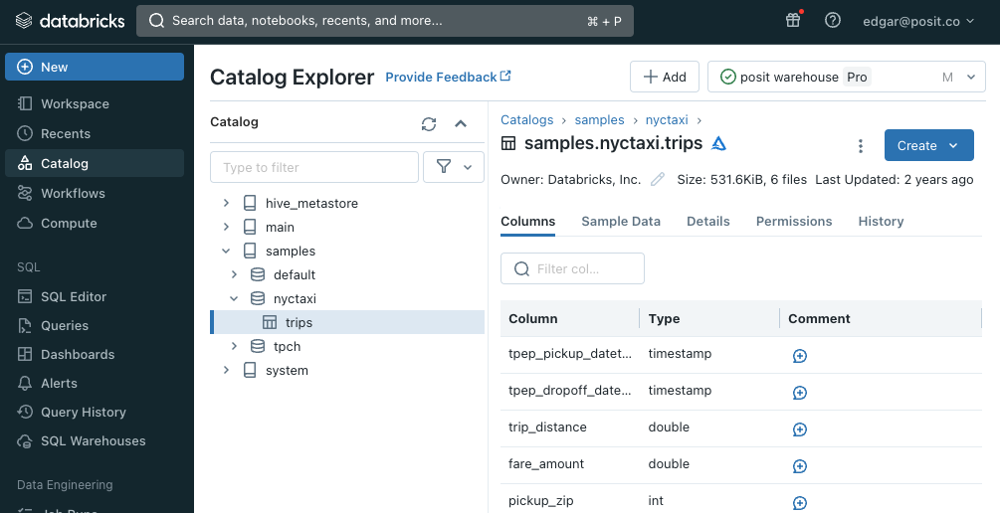
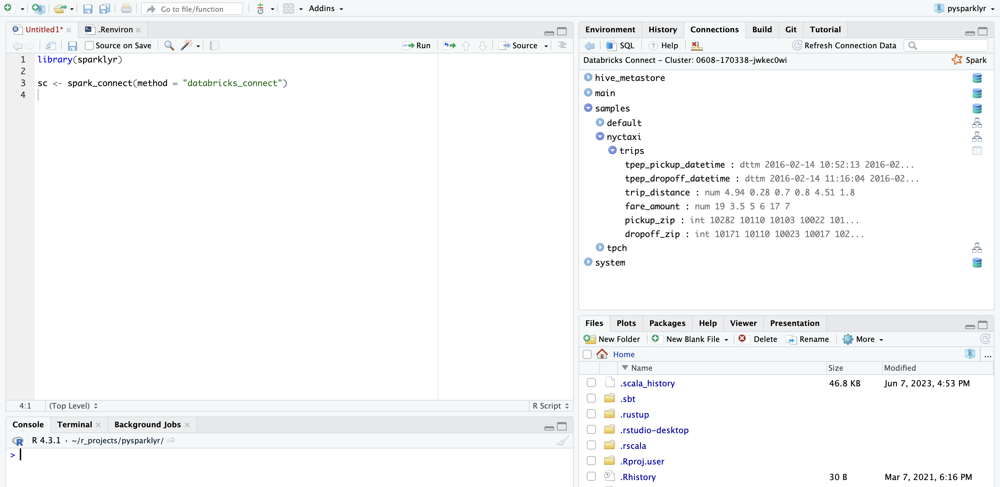 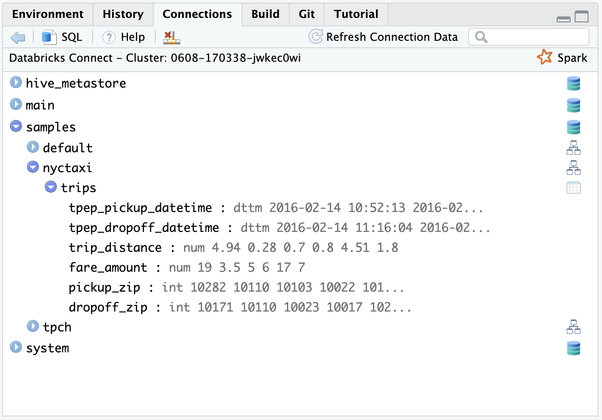
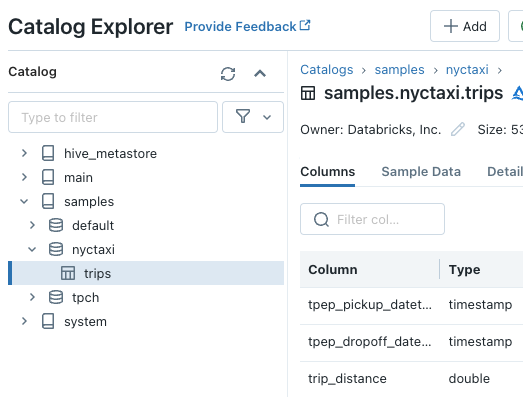
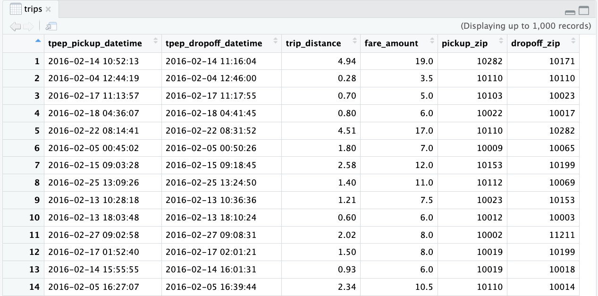
trips
#> # Source: spark<`samples`.`nyctaxi`.`trips`> [?? x 6]
#> tpep_pickup_datetime tpep_dropoff_datetime trip_distance fare_amount
#> <dttm> <dttm> <dbl> <dbl>
#> 1 2016-02-14 10:52:13 2016-02-14 11:16:04 4.94 19
#> 2 2016-02-04 12:44:19 2016-02-04 12:46:00 0.28 3.5
#> 3 2016-02-17 11:13:57 2016-02-17 11:17:55 0.7 5
#> 4 2016-02-18 04:36:07 2016-02-18 04:41:45 0.8 6
#> 5 2016-02-22 08:14:41 2016-02-22 08:31:52 4.51 17
#> 6 2016-02-05 00:45:02 2016-02-05 00:50:26 1.8 7
#> 7 2016-02-15 09:03:28 2016-02-15 09:18:45 2.58 12
#> 8 2016-02-25 13:09:26 2016-02-25 13:24:50 1.4 11
#> 9 2016-02-13 10:28:18 2016-02-13 10:36:36 1.21 7.5
#> 10 2016-02-13 18:03:48 2016-02-13 18:10:24 0.6 6
#> # ℹ more rows
#> # ℹ 2 more variables: pickup_zip <int>, dropoff_zip <int>#> # Source: spark<?> [?? x 3]
#> pickup_zip count avg_distance
#> <int> <dbl> <dbl>
#> 1 10032 15 4.49
#> 2 10013 273 2.98
#> 3 10022 519 2.00
#> 4 10162 414 2.19
#> 5 10018 1012 2.60
#> 6 11106 39 2.03
#> 7 10011 1129 2.29
#> 8 11103 16 2.75
#> 9 11237 15 3.31
#> 10 11422 429 15.5
#> # ℹ more rows
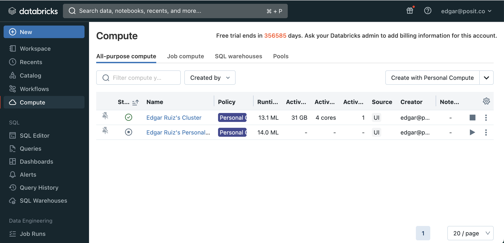
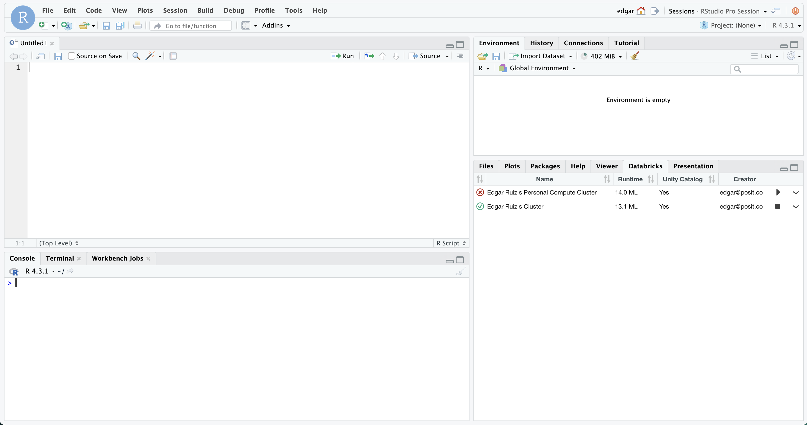
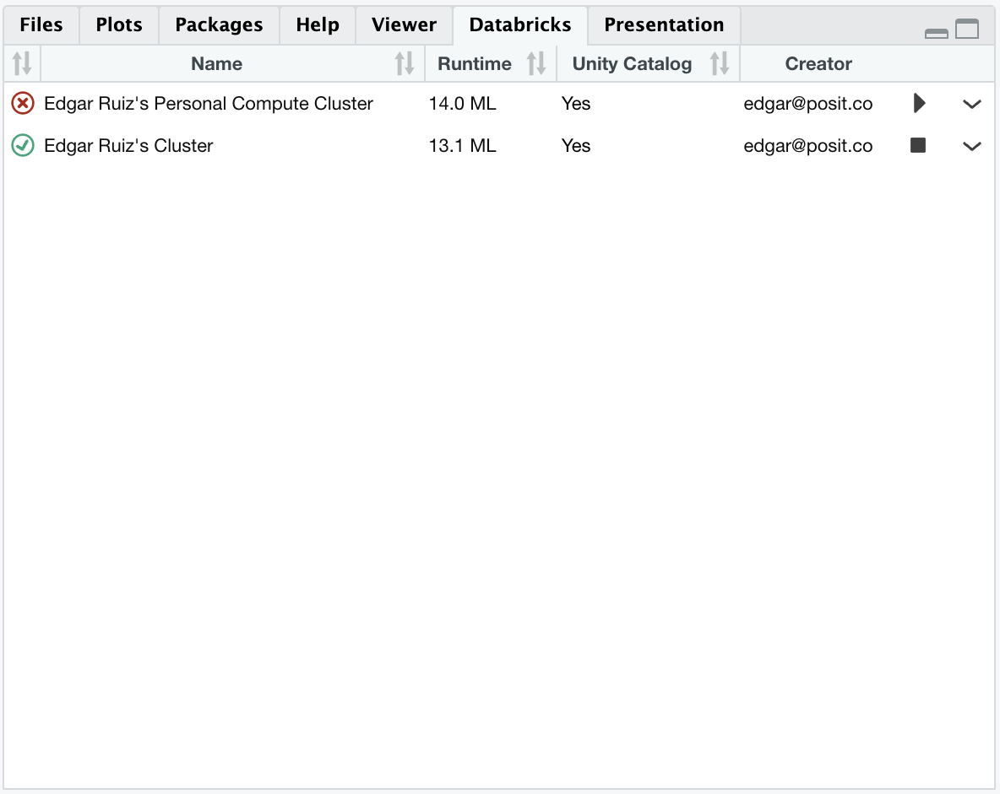
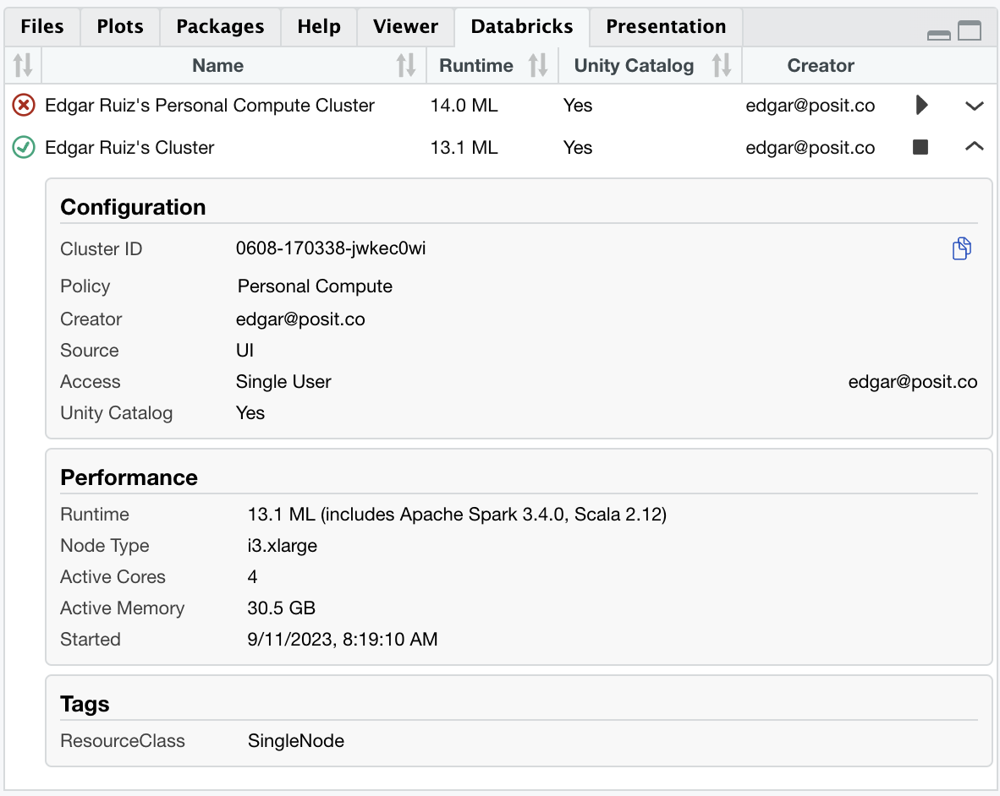
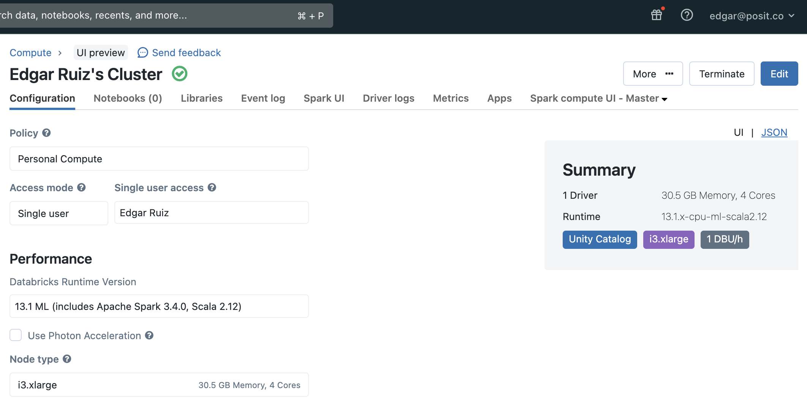
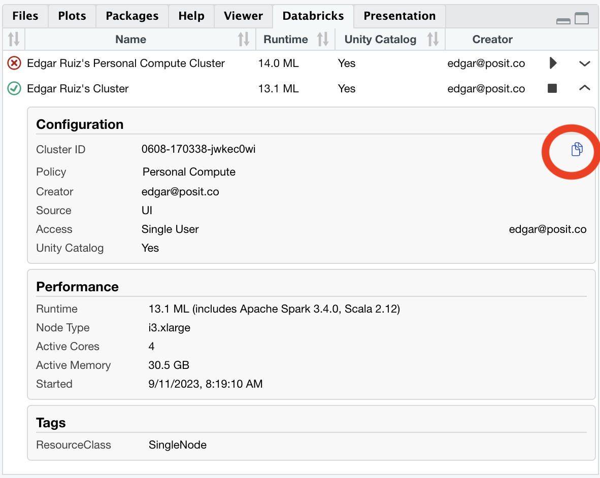
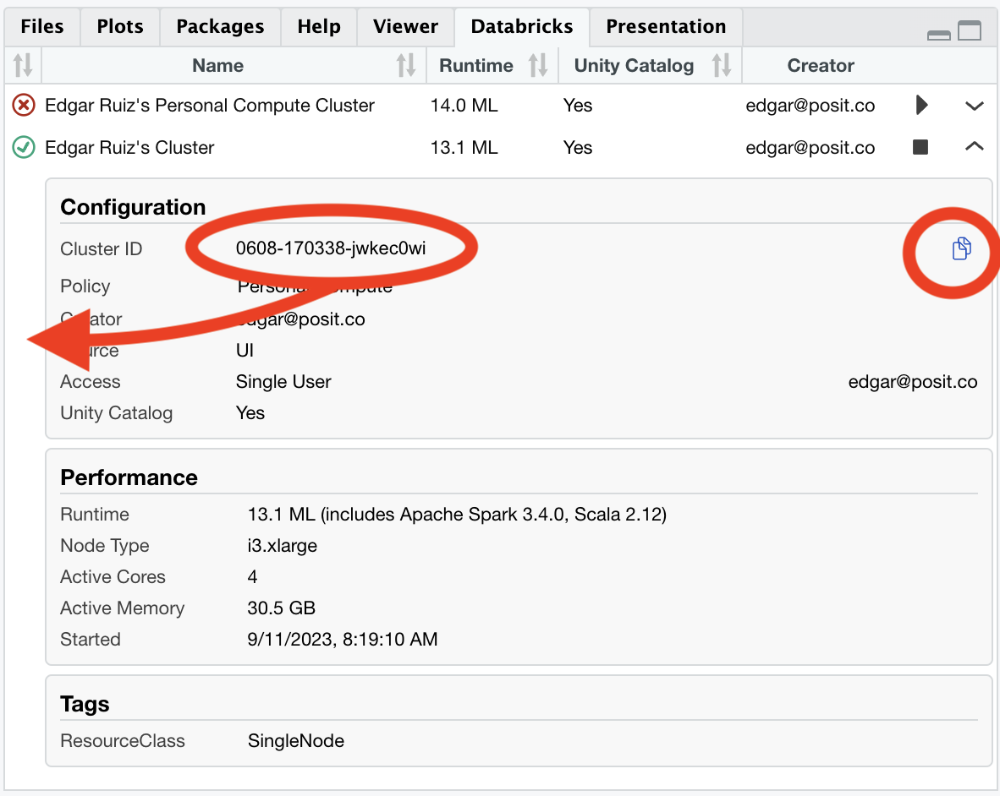
What is supported, and some advanced functionality
Most of the dplyr, and DBI, APIs
invoke() command
Connections Pane navigation
PAT for Databricks Connect
Most read and write commands
ML functions
SDF functions
tidyr
Easy to interact with the underlying Python components
Use reticulate to extend functionality
Use reticulate to extend functionality
head(r_preds, 3)
#> mpg cyl disp hp drat wt qsec vs am gear carb features prediction probability
#> 1 21.0 6 160 110 3.90 2.620 16.46 0 1 4 4 21.00, 2.62 1 0.4157636, 0.5842364
#> 2 21.0 6 160 110 3.90 2.875 17.02 0 1 4 4 21.000, 2.875 1 0.4890891, 0.5109109
#> 3 22.8 4 108 93 3.85 2.320 18.61 1 1 4 1 22.80, 2.32 1 0.2807752, 0.7192248A quick review, and link sharing
sparklyr supports Spark & Databricks Connect, via the pysparklyr extensionPySparkPySpark API through reticulateSpark Connect Overview - https://spark.apache.org/docs/latest/spark-connect-overview.html
Databricks Connect v2 intro post - https://www.databricks.com/blog/2023/04/18/use-databricks-anywhere-databricks-connect-v2.html
Using sparklyr with Connect article - https://spark.rstudio.com/deployment/databricks-spark-connect.html
Talk GitHub repo - https://github.com/edgararuiz/talks/tree/main/databricks
————— Link to the presentation —–>